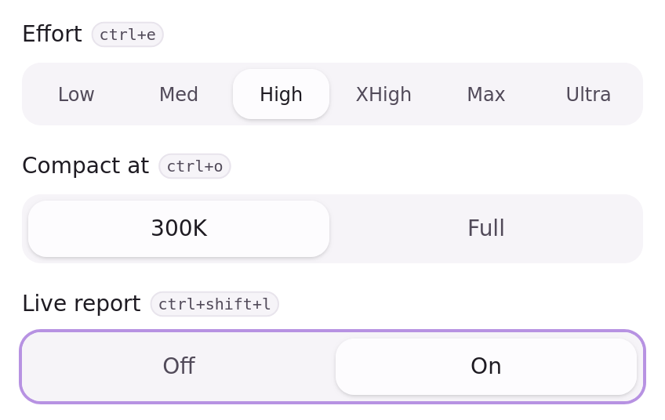
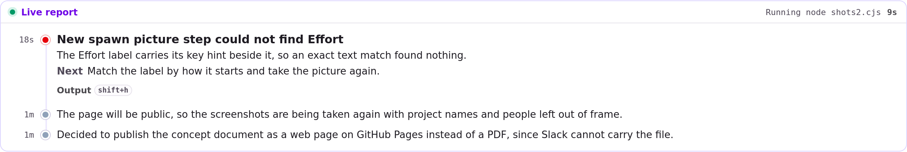
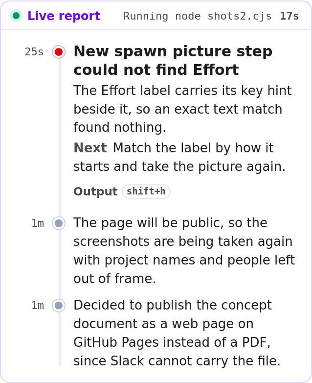
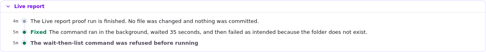

Live report
What an imba agent is doing while its turn is still running. Concept note, 18 November 2026.
The problem
While an agent works, imba shows one line: "working". A release that fails forty minutes into a turn stays unexplained until the agent finally replies. Nobody watching can tell a slow agent from a stuck one, or a careful one from one quietly retrying the same failure.
The idea
The agent writes short notes in its own words as it goes, and imba shows them in place of the "working" line. It is a story, not a step list: what was finished, what was found, what was decided, and what went wrong.
| Note | What it says |
|---|---|
| Note | One or two sentences on something finished, found or decided. |
| Problem | What failed, why, what happens next, and the command's own failing lines. |
| Fixed | How the newest open problem was solved. It shows as a green Fixed row. |
What keeps it honest
- A command that fails after running 30 seconds or longer is held: the agent cannot take its next step until it files a problem note explaining it.
- An agent that has written nothing for 5 minutes is stopped once and asked for a note.
- After two refusals in a row the work goes on anyway, so a broken note service never blocks an agent. The unexplained failure stays on the report.
How it looks




Cost
Each note is one extra step for the agent. An hour-long turn is held at most twelve times for silence, plus once per failed command. It works for Claude Code and Codex agents alike, and it is off unless chosen.